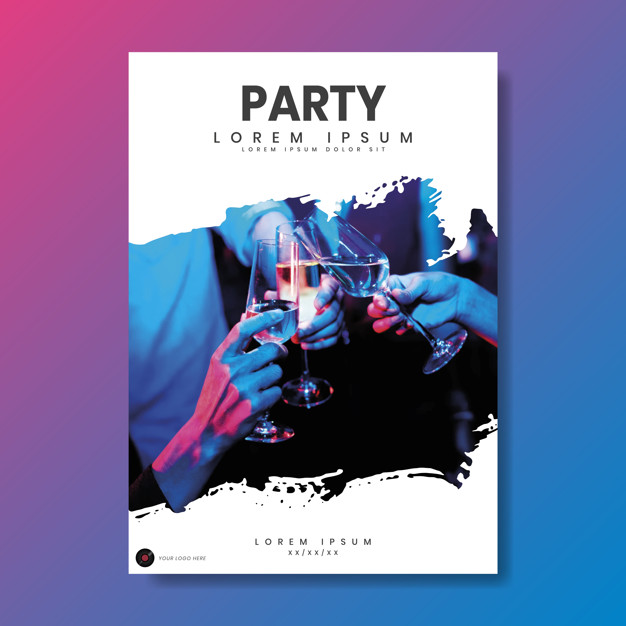
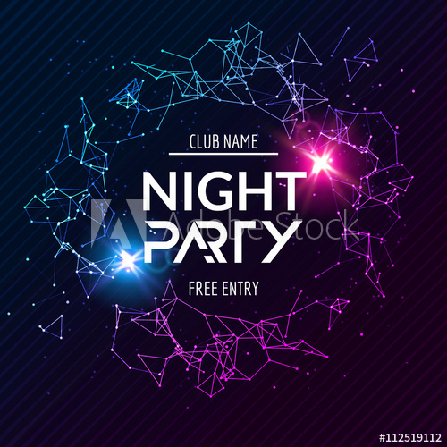

Featured
Trending
Nearby You
432 tickets available
Featured Event

15K likes
Segment Content
Favorites
Keep close to Nature's heart... and break clear away, once in awhile,
and climb a mountain or spend a week in the woods. Wash your spirit clean.
Segment Content
Profile
Keep close to Nature's heart... and break clear away, once in awhile,
and climb a mountain or spend a week in the woods. Wash your spirit clean.
Suggested for you
